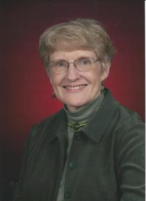
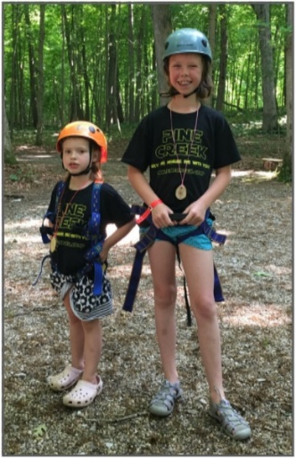
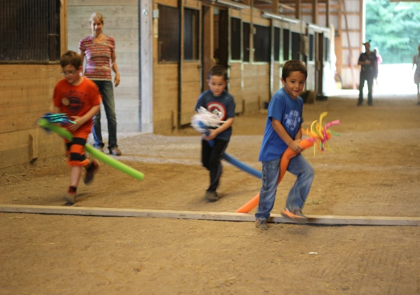
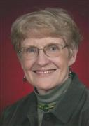

Beverly C. Bryan
May 19, 1937 to August 17, 2016
Relationship to St. Andrew United Methodist Church:
Beverly and her husband John were members of St. Andrew for 25 years. They were involved with many aspects of the youth programs at their church.
Family:
Husband: John Bryan
Sons: Daniel of Charlotte, NC; John of Fishers, IN and Kevin of Noblesville, IN.
Daughters: Dawn Boyd of Fishers, IN and Joy May of West Lafayette, IN.
Grandchildren: There are thirteen grandchildren and one great-grandchild
Beverly is preceded in death by her parents and one son, Scott B. Schwarz.
Recognitions, Activities, Special Interests:
Beverly graduated from Rossville High School in 1955, received her bachelor’s degree from DePauw University in 1959, and achieved her master’s degree from Purdue University in 1988. Beverly's teaching career involved stops at Verona High School in Verona, NJ, Clinton Center Elementary in Putman County, DeMotte United Methodist Kindergarten, and First Presbyterian Nursery School in Ft. Wayne. After marrying John, they opened a licensed preschool in their Tippecanoe County home which they operated until 2015.
Memorial: Funds are designated for the youth camp fund.

Summer camps for families and children – memorial funds used to pay part of cost of attendance in 2018.
Obituary published in the Journal & Courier from Aug. 19 to Aug. 20, 2016
Beverly C. Bryan
Beverly
C. Bryan, 79, of Lafayette, passed away on Wednesday, August 17, 2016, at St.
Elizabeth East Hospital.
She was born May 19, 1937, in Chicago, to Laurel Ottis and Mary Elizabeth
Harper Tansey. On June 24, 1977, she married John I. Bryan he survives in
Lafayette.
Beverly graduated from Rossville High School in 1955, received her bachelor's
degree from DePauw University in 1959, and achieved her master's degree
from Purdue University in 1988.
Throughout her life, Beverly taught at Verona High School in Verona, NJ,
Clinton Center Elementary in Putman County, DeMotte United Methodist Weekday
Kindergarten, and First Presbyterian Nursery School in Ft. Wayne. After
marrying John, they opened a licensed preschool in their home which she
operated until 2015. Beverly was a member of St. Andrew United Methodist Church
in West Lafayette. She enjoyed spending time with her family, camping, and her
church.
In addition to her husband, Beverly is survived by her children, Dr. Daniel
(Amy) Schwarz of Charlotte, NC, John (Stacey) Schwarz of Fishers, Dawn (Kevin)
Boyd of Fishers, Kevin (Kelsey) Schwarz of Noblesville, and Joy May of West
Lafayette; cousin, Rosemary (Max) Underhill of Sun City, AZ; 13 grandchildren,
Bradley Schwarz, Caroline Schwarz, and Grayson Schwarz, Blake Schwarz, Lily
Schwarz, Cagney Chentnik, and Tyler Schwarz, Andrew (Kenna) Fisher and Emily
Fisher, Jackson Schwarz and Nathan Schwarz, and Adam May and Noel May; and one
great grandchild on the way.
Beverly is preceded in death by her parents and one son, Scott B. Schwarz.
Visitation will be held at St. Andrew United Methodist Church in West
Lafayette, on Saturday, August 20, 2016, from 11:00 a.m. to the start of the
funeral service at 2:00 p.m. Pastor Chris Danielson will officiate. Burial will
follow in Rossville Cemetery. Memorials in Beverly's name may be made to St.
Andrew United Methodist Church. Arrangements are entrusted to Genda Funeral
Home Rossville Chapel. Online condolences may be directed to www.gendafuneralhome.com